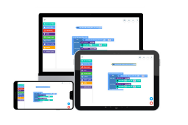
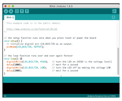
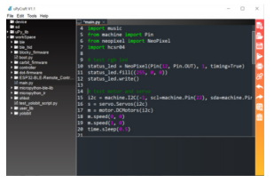
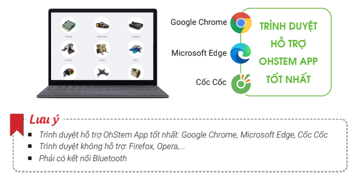
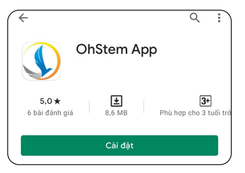
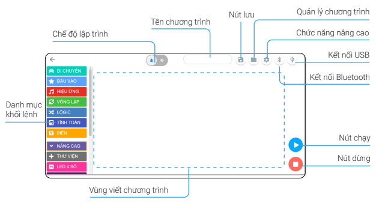
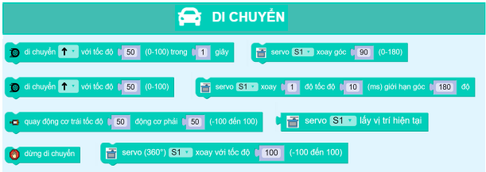
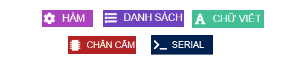
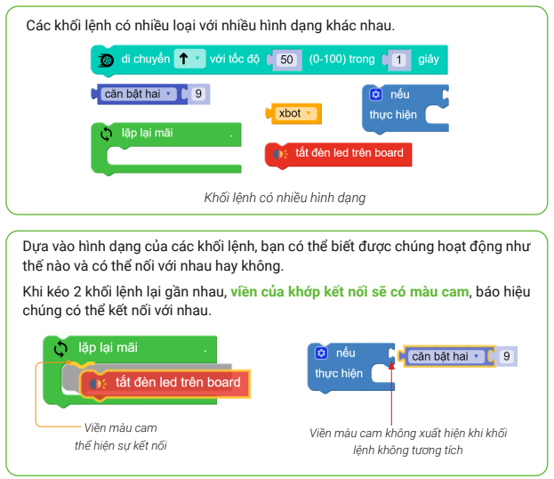
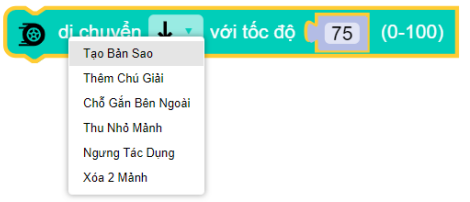

3. Làm quen với phần mềm OhStem App
Các môi trường lập trình cho xBot
Phần mềm OhStem App
Phần mềm này hỗ trợ lập trình bằng giao diện kéo thả các khối lệnh, phù hợp với các bạn nhỏ và người mới học lập trình.
OhStem App chạy được trên nhiều thiết bị khác nhau như máy tính, laptop, máy tính bảng, điện thoại (IOS và Android).
{kind=link}
Phần mềm Arduino
Arduino là môi trường lập trình dạng chữ viết dựa trên ngôn ngữ C đã được chỉnh sửa.
Arduino là phần mềm cực kỳ phổ biến và mạnh mẽ trong cộng đồng công nghê, phù hợp để lập trình các ứng dụng nâng cao và phức tạp hơn.
{kind=link}
Lập trình bằng MicroPython
Đây là ngôn ngữ được tạo ra dựa trên ngôn ngữ Python đã được rút gọn. Chúng phù hợp với các bộ xử lý nhỏ được sử dụng trong xBot, không có sức mạnh như máy tính của chúng ta.
Có rất nhiều phần mềm hỗ trợ lập trình MicroPython cho xBot: uPyCraft, Visual Studio Code,…
{kind=link}
Lưu ý: Cuốn sách này sẽ sử dụng OhStem App để hướng dẫn lập trình. Các môi trường lập trình còn lại sẽ được hướng dẫn trong các tài liệu khác.
Download và cài đặt phần mềm OhStem App
Trên máy tính và laptop
Trên máy tính hoặc laptop, bạn có thể truy cập vào trang web https://app.ohstem.vn để sử dụng phần mềm OhStem App mà không cần download và cài đặt gì khác.
{kind=link}
Trên máy tính bảng và điện thoại
Tìm và cài đặt ứng dụng OhStem App có trên Play Store của Android hoặc App Store của iOS.
{kind=link}
Giao diện lập trình kéo thả của OhStem App
Chọn menu lập trình để vào giao diện lập trình cho xBot.
{kind=link}
Các thành phần của giao diện lập trình này sẽ được giải thích chi tiết ở các phần tiếp theo.
Danh mục khối lệnh
Đây là khu vực chứa các nhóm khối lệnh, với nhiều màu sắc khác nhau cho từng nhóm, giúp chúng ta dễ dàng tìm được khối lệnh cần sử dụng khi cần.
{kind=link}
{kind=link}

{kind=link}
Ngoài ra còn có một số khối lệnh nâng cao khác sẽ được nhắc đến trong bài sau.
{kind=link}
Vùng viết chương trình
Đây là nơi chúng ta lắp ghép các khối lệnh với nhau và tạo thành chương trình.
Bạn có thể kéo và di chuyển, phóng to, thu nhỏ các khối lệnh.
Chế độ lập trình
OhStem App hỗ trợ 2 chế độ lập trình là: lập trình kéo thả khối lệnh và lập trình bằng code với ngôn ngữ MicroPython.

Các nút chức năng
{kind=link}
Thao tác làm việc với khối lệnh

{kind=link}
Kết nối các khối lệnh
Xóa khối lệnh
Trên máy tính, laptop
Di chuyển chuột đến khối lệnh
Nhấp chuột phải (hiển thị bảng tùy chọn)
Chọn Xóa mảnh này
{kind=link}
Xóa trên thiết bị di động
Nhấn giữ khối lệnh để chờ bảng tùy chọn hiện ra.
Chọn Xóa mảnh này
{kind=link}
Xóa nhiều khối lệnh bằng khối lệnh cha
Để xóa được nhiều khối lệnh, các khối lệnh cần nằm trong khối lệnh cha
Khi xóa khối lệnh cha, các khối lệnh con sẽ bị xóa theo (bảng tùy chọn sẽ hiển thị số mảnh sẽ bị xóa)
{kind=link}
Xóa nhiều khối lệnh bằng cách kéo thả
Nhấp giữ nhóm khối lệnh và kéo vào danh mục khối lệnh
{kind=link}
Thả ra để xóa nhóm khối lệnh
{kind=link}
Sao chép khối lệnh
Để rút ngắn thời gian viết chương trình, bạn nên sử dụng chức năng sao chép cho những khối lệnh cần lặp lại nhiều lần.
Tương tự như xóa khối lệnh, bạn chọn khối lệnh và click chuột phải, chọn Tạo bản sao.
{kind=link}
Bên cạnh đó, để tạo bản sao cho nhiều khối lệnh, các khối lệnh cần nằm trong khối lệnh cha, khi đó ta sao chếp khối lệnh cha sẽ sao chép luôn tất cả các khối lệnh con có trong đó:

Cách chạy và dùng chương trình
Sau khi viết chương trình xong, bạn có thể gửi chương trình qua xBot để chạy bằng cách nhấn vào nút Chạy.
Khi chương trình đang chạy, nếu bạn muốn dừng lại hãy nhấn vào nút Dừng.